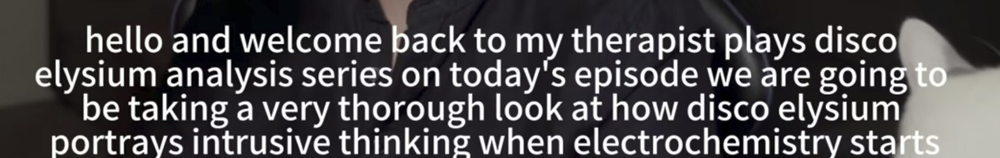

Accurate captions for videos are essential for accessibility and understanding, especially as video content grows. Current speech-to-text (STT) systems often have trouble predicting timestamps correctly, which results in misaligned or overly long captions. We aim to improve readability of captions by accurately segmenting the audio transcripts generated by Whisper. We are using prompt engineering with LLMs to improve the segmentation and then realigning captions with word-level timestamps produced by Whisper-timestamped.
The below image conveys the main reason for us doing this research. StyLEx.

The caption given is clutterd and hard to read and is delayed leading to the overall experience of the viewer tanking. we would like to improve these aspects through our research.
Speech-to-Text (STT) systems often encounter challenges in generating accurate captions, particularly in scenarios involving rapid speech, diverse accent backgrounds, multi-speaker interactions. These challenges impact the readability and comprehension of video subtitles, especially in educational and entertainment contexts. This research aims to enhance subtitle generation and accuracy by developing advanced transcription techniques that improve the overall quality of captions across diverse platforms.
This research aims to enhance video subtitle alignment and segmentation for better accessibility and viewing experiences. Key objectives include:
We constructed a custom dataset from YouTube videos created by Euro Brady, which focus on analyzing the game Disco Elysium. The dataset comprises:
To prepare the dataset, we used automated transcription tools to generate .srt files, which were subsequently refined manually by:
This process ensured a high-quality dataset for evaluating and improving subtitle generation techniques.
In our approach, we compared the ground truth (GT) captions with transcription outputs from three different variants of the Whisper model:
To improve the performance of these models, we fine-tuned the Whisper base models on the PolyAI/minds 14 dataset, which consists of a large collection of conversational speech data from diverse sources. This dataset includes over 14,000 hours of dialogue across multiple domains and accents, making it an ideal resource for training a more robust speech-to-text (STT) system.
Fine-tuning on this dataset enabled Whisper to better handle various speech patterns, accents, and noise in real-world audio, leading to more accurate transcriptions, especially in noisy environments.
For subtitle generation, we experimented with multiple segmentation approaches to handle long sentences and ensure proper alignment of subtitles.
We used the full transcript from the Whisper-Timestamped model as input for Gemini 1.5 Pro, instructing it to segment the text \textbf{without modifying the extracted content}. While Gemini is effective at generating accurate segments in its standard form, we encountered challenges with longer videos (over 5 minutes in duration), where it tended to produce hallucinations or repeat the original text without proper segmentation.
Segment Any Text (SAT) is a fast, multilingual sentence segmentation model that handles noisy and short text efficiently. It uses subword tokenization, robust training with data corruption, and a limited lookahead mechanism for accurate segmentation across various domains.
We have finetuned SaT on our Custom dataset to observe its performance for subtitle segmentation and alignment.
We developed a custom segmentation function that helps in generating improved subtitles without any LLMs. To improve readability and alignment we have incorporated the following into our function:
max_words).gap_threshold. Creates new subtitle segments at detected pauses that exceed the threshold for better synchronization.Prompt used with LLMs for segmentation: Combining Role-play and Contextual Fusion
We encountered the following major challenges during our research:
Our hypothesis is that combining custom segmentation techniques with fine-tuned STT models will outperform standalone STT models for subtitle generation. By refining segmentation based on punctuation, gaps, and timestamps, this hybrid approach aims to improve alignment and accuracy, especially for accents, proper nouns, and fast speech.
This project aims to improve accessibility for deaf and hard-of-hearing viewers, enhance comprehension in educational contexts, and help content creators reach global audiences with precise English subtitles. Accurate captions can increase viewer engagement, boost SEO, and ensure a seamless user experience. Additionally, the project could advance AI and NLP technologies by refining captioning methodologies, benefiting video content quality across platforms.
Examples of ground truth SRT files
Our project addresses limitations in Whisper's transcription process, focusing on improving spoken word accuracy and subtitle readability. Whisper, while robust, often struggles with punctuation, grammar, and contextual understanding, leading to less polished subtitles.
To enhance accuracy, we integrate Whisper with LLMs like Gemini-1.5 and GPT-40, for improving segmentation of long sentences. By experimenting with different prompting techniques we are able to be coherent captions with correct grammar and punctuation for relevant video frames.
We also introduce a custom segmentation function to split long speech segments into concise, contextually meaningful chunks, improving readability and comprehension. Our approach delivers more accurate, user-friendly subtitles, addressing critical challenges in transcription and subtitling for media, education, and accessibility.
We assess the final SRTs obtained after applying LLM/custom function segmentation w.r.t. GT files using:
Character Error Rate Calculation
Word Error Rate Calculation
Maximum and Minimum WER and CER values obtained with different methods
Visualizing WER/CER levels for different SRT outputs of Custom segment function
Human observation remains the most effective method to assess subtitle quality. This involves checking how well the subtitles align with the spoken words, ensuring the displayed text matches the speech, and verifying that subtitles appear on-screen in a timely manner, synchronized with the dialogue.
|
Ground Truth |
Whisper-Medium |
Whisper-Timestamped |
Whisper-X |
Initial transcription results - color coding represents the Whisper model used
This illustrates the performance of different segmentation methods and their alignment with ground truth subtitles. Each method produces varying lengths of segments, thus the total number of segments also varies.
Comparing Segments across different Text Segmentation methods
Visually comparing outputs (example in figures below) revealed that the custom segmentation function closely matches Gemini's output, with only minor transcription differences in Gemini. However, like all LLMs, Gemini occasionally modifies the original transcript through word insertions or deletions.
The custom function demonstrated the most consistent performance, adhering to a maximum segment length of 8 words and maintaining sentence integrity and alignment.
SaT output
Gemini-1.5 output
Custom function
While Gemini and GPT perform comparably, SaT remains unsatisfactory despite being specifically trained for segmentation. It produces excessively long segments, making the subtitles unsuitable for viewing, highlighting the limitations of its current implementation for practical use.
Figure below illustrates a common issue with LLMs: the unintended insertion or deletion of words in the transcript.
Results of each method for the same paragraph.
This work is easily replicable due to the detailed methodology and use of publicly available tools and datasets.
The custom dataset, sourced from Euro Brady's YouTube series and enriched with manual refinements, includes accurate SRTs that serve as a robust baseline for benchmarking subtitle generation models. Its availability encourages further research into improving transcription accuracy across diverse audio-visual content.
While the dataset comprises publicly available content, privacy and copyright laws must be respected. Inaccuracies in transcription, particularly in sensitive contexts, could lead to misinformation. Transparency about limitations and human verification for critical use cases are necessary to mitigate risks.
We developed an end-to-end pipeline integrated into a user-friendly Streamlit GUI to demonstrate the Speech to text transcription and Subtitle generation process. Users can seamlessly input a YouTube URL or upload a video file, extract audio, and generate captions using Whisper-timestamped model and Segmentation function.
GUI display: processing a YouTube video and correcting the subtitles
Figure above shows the display of GUI, in the left panel link to YouTube video link can be pasted. A video in mp4 format could also be uploaded. It also shows the process of downloading audio /video from a YouTube link given as input and generating the improved SRT with custom segmentation approach for the final subtitles.
GUI display: processing a YouTube video and correcting the subtitles
Finally, the refined SRT files' subtitles are embedded into the video using FFmpeg, creating a captioned video output. With options to preview the video and download the SRT file, the pipeline offers a complete solution for showcasing the workflow and results in an interactive demo (see figure above).
Future research could focus on fine-tuning the Whisper/SaT models on diverse datasets for better accent recognition and handling complex audio environments. Implementing advanced noise-canceling techniques and enhancing the contextual understanding of speech could further improve accuracy.
Also as suggested during the poster presentation, future work could involve comparing the audio signal with timestamps and transcribed subtitles to evaluate how accurately subtitles align with the speech flow. However, this task is complex, as it requires simultaneously analyzing audio signals, word alignment, and timestamp accuracy. Due to time constraints, this approach could not be implemented in the current project but remains a valuable direction for further research.
This project improved subtitle accuracy by enhancing STT outputs with a custom segmentation function, achieving better word accuracy, punctuation, and readability. Metrics like WER and BLEU demonstrated the proposed approach's superiority over baseline models, such as Whisper-Medium and Gemini.
Combining Whisper-timestamped with VAD feature transcription with multiple segmentation techniques (utilizing LLMs/ our custom segmentation function) proved effective in generating accurate, readable subtitles, addressing challenges like accents, fast speech, and noise. These findings contribute to advancing AI and NLP for automated transcription.
The system has broad applications in media, education, accessibility, multilingual content creation, and corporate communication, enhancing transcription accuracy and user experience across diverse industries.